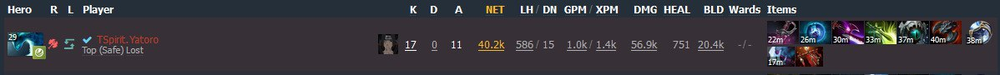

Yours start buy always should include "magic wand" basic stick u can buy upgraded sticks and 3 branches or (circlet, tango, wand, 3 branchs)
Morph is a hero who always wannna have stats cos of manapool and hp, basically u always wanna be in agi but have at least 2k hp
Tier 2 items: Skadi(trash now stats reduced), "daedalus(1200dmg crit huh)", "agility blink(so OP now incredible boost to hero in late and mid game), "linken(good if play with no bkb, dont rush without manta only if u see [beast, doom, legion, lion rare])", "disperser"
Tier 3 items: "mkb(0 stats lil damage i dont like it u can always give 2k dmg with khanda)", "Hurrikan pike(Actually it is good, if u see gyro200%, vs pa, slark, luna, dont rush with dl very rare)"
In game u just go with pt vlaimir manta khanda bkb butterfly satanic blink(total basic)
2. Map & Farm (what to do)Morph is a hard carry so u always wanna play ur lane long as u can, last hit important use wave to skip wave and adaptive to always control range creep
If u stay 1v1 always pressure ur enemy beacuse u have unlimited hp(but dont die like a dogshit) skip wave go farm nearby camps until yasha or manta
After u wanna go farm ancients if u super free farm u can try to farm enemies triangle so u pressure tower farm everything and if u not stupid 8-11k nw until 15 min for free
U need to see enemies pick, if they weak in early game u can easily help e'm with tp and get free kills, on game u wanna be big when u have khanda u should take tormentor(solo u can do it)
With butterfly u have free roshan if u even not playing as 1 nubmer u can force it and took so fast or even solo, play aggresive if u can push lanes, dont be scared to waste mana always use waveform from camp to camp stack camps if u can and do it fast so dont waste ur nw it always should grow
Middle GPM is 700, if u good it easily could be 800-900, if u are the genious and had read mu guide u'll have 1k GPM as YatoroGOD prime
After bkb plat with team and dont go first do not waste wave always try to kill sups fast
3. Pick for morphMorph now multi hero so he do not scared to play against aparation or am now it's all depend on ur own skil
The most hatefull heroes for me: Nyx, terrorblade(pos 3 XDD), lion(i hope he's family dies), maybe kez(i playerd he was strong on lane btw I won)
U jest need practice and after u automatically can understand what to do against heroes
VS am go fast fly and afk farm until it (+- 18-24min) stupid am's would jump on you everytime and die like dogs just hit him afk u'll kill him i swear
4. TimingsPt 2-5, vladmir 7-11, manta 12-18, khanda 18-24, fly 18-24, satanic 30-35(depends on game), bkb 18-22(if u rush) basic free game 30-40 other items like blink depends on game could be 30-999999
5. FacetAlways EBB if mid or sup go(flow idiot), ur innate ability best thing in a game give u stats for half level not for all I' ll talk abt it now
AbilitiesWith wave pressure enemy max it, adaptiv 1 or 0, shift 2 or 3, ulti +- with manta when u can fight, untill 10th min 4 wave 0 adaptive 2 shift talent 250+ waveform and just +2 atributes all time, 15lvl 15agi, 20 75% dmg wave, 25lvl -40%cd
It is a normal morph game if u just doing what u should to do depend on ur micro and macro game Game took 42 minutes and look at his stats GPM last hits(Click on image to see full game) 
This game was lil bit longer also 1k GPM by Ame morph u can check demo and see how he pressured beastmaster all game